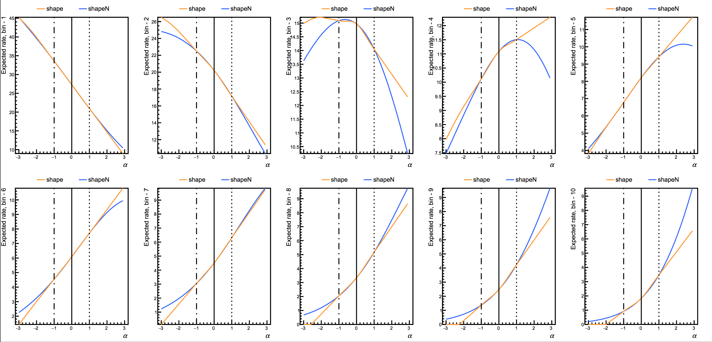
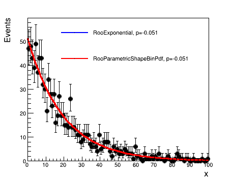
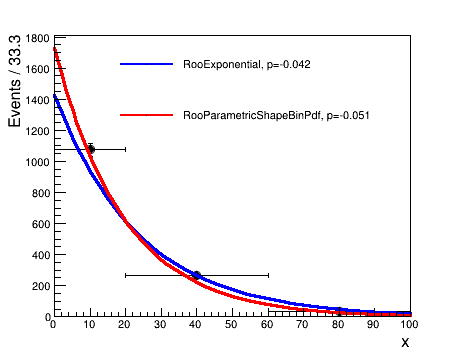

Preparing the datacard
The input to Combine, which defines the details of the analysis, is a plain ASCII file we will refer to as datacard. This is true whether the analysis is a simple counting experiment or a shape analysis.
A simple counting experiment
The file data/tutorials/counting/realistic-counting-experiment.txt shows an example of a counting experiment.
The first lines can be used to add some descriptive information. Those lines must start with a "#", and they are not parsed by Combine:
# Simple counting experiment, with one signal and a few background processes
# Simplified version of the 35/pb H->WW analysis for mH = 160 GeV
Following this, one declares the number of observables, imax, that are present in the model used to set limits / extract confidence intervals. The number of observables will typically be the number of channels in a counting experiment. The value * can be specified for imax, which tells Combine to determine the number of observables from the rest of the datacard. In order to better catch mistakes, it is recommended to explicitly specify the value.
imax 1 number of channels
This declaration is followed by a specification of the number of background sources to be considered, jmax, and the number of independent sources of systematic uncertainty, kmax:
jmax 3 number of backgrounds
kmax 5 number of nuisance parameters (sources of systematic uncertainty)
In the example there is 1 channel, there are 3 background sources, and there are 5 independent sources of systematic uncertainty.
After providing this information, the following lines describe what is observed in data: the number of events observed in each channel. The first line, starting with bin, defines the label used for each channel. In the example we have 1 channel, labelled 1, and in the following line, observation, the number of observed events is given: 0 in this example.
# we have just one channel, in which we observe 0 events
bin bin1
observation 0
bin bin1 bin1 bin1 bin1
process ggH qqWW ggWW others
process 0 1 2 3
rate 1.47 0.63 0.06 0.22
- The
binline identifies the channel that the column refers to. It ranges from1to the value ofimaxdeclared above. - The first
processline contains the names of the various process sources - The second
processline is a numerical process identifier. Backgrounds are given a positive number, while0and negative numbers are used for signal processes. Different process identifiers must be used for different processes. - The last line,
rate, gives the expected number of events for the given process in the specified bin
If a process does not contribute in a given bin, it can be removed from the datacard, or the rate can be set to 0.
The final section of the datacard describes the systematic uncertainties:
lumi lnN 1.11 - 1.11 - lumi affects both signal and gg->WW (mc-driven). lnN = lognormal
xs_ggH lnN 1.16 - - - gg->H cross section + signal efficiency + other minor ones.
WW_norm gmN 4 - 0.16 - - WW estimate of 0.64 comes from sidebands: 4 events in sideband times 0.16 (=> ~50% statistical uncertainty)
xs_ggWW lnN - - 1.50 - 50% uncertainty on gg->WW cross section
bg_others lnN - - - 1.30 30% uncertainty on the rest of the backgrounds
- The first column is the name of the nuisance parameter, a label that is used to identify the uncertainty
- The second column identifies the type of distribution used to describe the nuisance parameter
lnNstands for Log-normal, which is the recommended choice for multiplicative corrections (efficiencies, cross sections, ...). If Δx/x is the relative uncertainty in the multiplicative correction, one should put 1+Δx/x in the column corresponding to the process and channel. Asymmetric log-normals are instead supported by providing κdown/κup where κdown is the ratio of the the yield to the nominal value for a -1σ deviation of the nuisance parameter and κup is the ratio of the yield to the nominal value for a \(+1\sigma\) deviation. Note that for a single-value log-normal with value \(\kappa=1+\Delta x/x\), the yield of the process it is associated with is multiplied by \(\kappa^{\theta}\). At \(\theta=0\) the nominal yield is retained, at \(\theta=1\sigma\) the yield is multiplied by \(\kappa\) and at \(\theta=-1\sigma\) the yield is multiplied by \(1/\kappa\). This means that an uncertainty represented as1.2does not multiply the nominal yield by 0.8 for \(\theta=-1\sigma\); but by 0.8333. It may therefore be desirable to encode large uncertainties that have a symmetric effect on the yield as asymmetric log-normals instead.gmNstands for Gamma, and is the recommended choice for the statistical uncertainty in a background determined from the number of events in a control region (or in an MC sample with limited sample size). If the control region or simulated sample contains N events, and the extrapolation factor from the control region to the signal region is α, one shoud put N just after thegmNkeyword, and then the value of α in the relevant (bin,process) column. The yield specified in therateline for this (bin,process) combination should equal Nα.lnUstands for log-uniform distribution. A value of 1+ε in the column will imply that the yield of this background is allowed to float freely between x(1+ε) and x/(1+ε). In particular, if ε is small, this is approximately (x-Δx,x+Δx) with ε=Δx/x. This distribution is typically useful when you want to set a large a-priori uncertainty on a given background process, and then rely on the correlation between channels to constrain it. Note that for this use case, we usually recommend using arateParaminstead. If you do uselnU, please be aware that while Gaussian-like uncertainties behave in a similar way under profiling and marginalization, uniform uncertainties do not. This means the impact of the uncertainty on the result will depend on how the nuisance parameters are treated.
- The next (#channels)*(#processes) columns indicate the relative effect of the systematic uncertainty on the rate of each process in each channel. The columns are aligned with those in the previous lines declaring bins, processes, and rates.
In the example, there are 5 uncertainties:
- The first uncertainty has an 11% effect on the signal and on the
ggWWprocess. - The second uncertainty affects the signal by 16%, but leaves the background processes unaffected
- The third line specifies that the
qqWWbackground comes from a sideband with 4 observed events and an extrapolation factor of 0.16; the resulting uncertainty in the expected yield is \(1/\sqrt{4+1}\) = 45% - The fourth uncertainty does not affect the signal, has a 50% effect on the
ggWWbackground, and leaves the other backgrounds unaffected - The fifth uncertainty does not affect the signal, has a 30% effect on the
othersbackground process, and does not affect the remaining backgrounds.
Shape analyses
The datacard has to be supplemented with two extensions:
- A new block of lines defining how channels and processes are mapped into shapes.
- The block for systematics can now also contain rows with shape uncertainties.
The expected shape can be parametric, or not. In the first case the parametric PDFs have to be given as input to the tool. In the latter case, for each channel, histograms have to be provided for the expected shape of each process. The data have to be provided as input as a histogram to perform a binned shape analysis, and as a RooDataSet to perform an unbinned shape analysis.
Warning
If using RooFit-based inputs (RooDataHists/RooDataSets/RooAbsPdfs) then you need to ensure you are using different RooRealVars as the observable in each category entering the statistical analysis. It is possible to use the same RooRealVar if the observable has the same range (and binning if using binned data) in each category, although in most cases it is simpler to avoid doing this.
Rates for shape analyses
As with the counting experiment, the total nominal rate of a given process must be identified in the rate line of the datacard. However, there are special options for shape-based analyses, as follows:
- A value of -1 in the rate line means Combine will calculate the rate from the input TH1 (via TH1::Integral) or RooDataSet/RooDataHist (via RooAbsData::sumEntries).
- For parametric shapes (RooAbsPdf), if a parameter with the name pdfname_norm is found in the input workspace, the rate will be multiplied by the value of that parameter. Note that since this parameter can be freely floating, the normalization of a process can be set freely float this way. This can also be achieved through the use of
rateParams.
Binned shape analyses
For each channel, histograms have to be provided for the observed shape and for the expected shape of each process.
- Within each channel, all histograms must have the same binning.
- The normalization of the data histogram must correspond to the number of observed events.
- The normalization of the expected histograms must match the expected event yields.
The Combine tool can take as input histograms saved as TH1, as RooAbsHist in a RooFit workspace (an example of how to create a RooFit workspace and save histograms is available in github), or from a pandas dataframe (example).
The block of lines defining the mapping (first block in the datacard) contains one or more rows of the form
shapes process channel file histogram [histogram_with_systematics]
In this line,
processis any one the process names, or*for all processes, ordata_obsfor the observed data;channelis any one the process names, or*for all channels;file,histogramandhistogram_with_systematicsidentify the names of the files and of the histograms within the file, after making some replacements (if any are found):$PROCESSis replaced with the process name (or "data_obs" for the observed data);$CHANNELis replaced with the channel name;$SYSTEMATICis replaced with the name of the systematic + (Up,Down);$MASSis replaced with the chosen (Higgs boson) mass value that is passed as a command-line option when running the tool
In addition, user-defined keywords can be used. Any word in the datacard $WORD will be replaced by VALUE when including the option --keyword-value WORD=VALUE. This option can be repeated multiple times for multiple keywords.
Template shape uncertainties
Shape uncertainties can be taken into account by vertical interpolation of the histograms. The shapes (fraction of events \(f\) in each bin) are interpolated using a spline for shifts below +/- 1σ and linearly outside of that. Specifically, for nuisance parameter values \(|\nu|\leq 1\)
and for \(|\nu|> 1\) (\(|\nu|<-1\)), \(f(\nu)\) is a straight line with gradient \(\delta^{+}\) (\(\delta^{-}\)), where \(\delta^{+}=f(\nu=1)-f(\nu=0)\), and \(\delta^{-}=f(\nu=-1)-f(\nu=0)\), derived using the nominal and up/down histograms.
This interpolation is designed so that the values of \(f(\nu)\) and its derivatives are continuous for all values of \(\nu\).
The normalizations are interpolated linearly in log scale, just like we do for log-normal uncertainties. If the value in a given bin is negative for some value of \(\nu\), the value will be truncated at 0.
For each shape uncertainty and process/channel affected by it, two additional input shapes have to be provided. These are obtained by shifting the parameter up and down by one standard deviation. When building the likelihood, each shape uncertainty is associated to a nuisance parameter taken from a unit gaussian distribution, which is used to interpolate or extrapolate using the specified histograms.
For each given shape uncertainty, the part of the datacard describing shape uncertainties must contain a row
name shape effect_for_each_process_and_channel
The effect can be "-" or 0 for no effect, 1 for the normal effect, and something different from 1 to test larger or smaller effects (in that case, the unit gaussian is scaled by that factor before using it as parameter for the interpolation).
The datacard in data/tutorials/shapes/simple-shapes-TH1.txt provides an example of how to include shapes in the datacard. In the first block the following line specifies the shape mapping:
shapes * * simple-shapes-TH1.root $PROCESS $PROCESS_$SYSTEMATIC
The last block concerns the treatment of the systematic uncertainties that affect shapes. In this case there are two uncertainties with a shape-altering effect.
alpha shape - 1 uncertainty on background shape and normalization
sigma shape 0.5 - uncertainty on signal resolution. Assume the histogram is a 2 sigma shift,
# so divide the unit gaussian by 2 before doing the interpolation
There are two options for the interpolation algorithm in the "shape" uncertainty. Putting shape will result in an interpolation of the fraction of events in each bin. That is, the histograms are first normalized before interpolation. Putting shapeN while instead base the interpolation on the logs of the fraction in each bin. For both shape and shapeN, the total normalization is interpolated using an asymmetric log-normal, so that the effect of the systematic on both the shape and normalization are accounted for. The following image shows a comparison of the two algorithms for the example datacard.

In this case there are two processes, signal and background, and two uncertainties affecting the background (alpha) and signal shapes (sigma). In the ROOT file, two histograms per systematic have to be provided, they are the shapes obtained, for the specific process, by shifting the parameter associated with the uncertainty up and down by a standard deviation: background_alphaUp and background_alphaDown, signal_sigmaUp and signal_sigmaDown.
The content of the ROOT file simple-shapes-TH1.root associated with the datacard data/tutorials/shapes/simple-shapes-TH1.txt is:
root [0]
Attaching file simple-shapes-TH1.root as _file0...
root [1] _file0->ls()
TFile** simple-shapes-TH1.root
TFile* simple-shapes-TH1.root
KEY: TH1F signal;1 Histogram of signal__x
KEY: TH1F signal_sigmaUp;1 Histogram of signal__x
KEY: TH1F signal_sigmaDown;1 Histogram of signal__x
KEY: TH1F background;1 Histogram of background__x
KEY: TH1F background_alphaUp;1 Histogram of background__x
KEY: TH1F background_alphaDown;1 Histogram of background__x
KEY: TH1F data_obs;1 Histogram of data_obs__x
KEY: TH1F data_sig;1 Histogram of data_sig__x
For example, without shape uncertainties there would only be one row with
shapes * * shapes.root $CHANNEL/$PROCESS
Then, to give a simple example for two channels ("e", "mu") with three processes ()"higgs", "zz", "top"), the ROOT file contents should look like:
| histogram | meaning |
|---|---|
e/data_obs |
observed data in electron channel |
e/higgs |
expected shape for higgs in electron channel |
e/zz |
expected shape for ZZ in electron channel |
e/top |
expected shape for top in electron channel |
mu/data_obs |
observed data in muon channel |
mu/higgs |
expected shape for higgs in muon channel |
mu/zz |
expected shape for ZZ in muon channel |
mu/top |
expected shape for top in muon channel |
If there is also an uncertainty that affects the shape, e.g. the jet energy scale, shape histograms for the jet energy scale shifted up and down by one sigma need to be included. This could be done by creating a folder for each process and writing a line like
shapes * * shapes.root $CHANNEL/$PROCESS/nominal $CHANNEL/$PROCESS/$SYSTEMATIC
or a postifx can be added to the histogram name:
shapes * * shapes.root $CHANNEL/$PROCESS $CHANNEL/$PROCESS_$SYSTEMATIC
Warning
If you have a nuisance parameter that has shape effects on some processes (using shape) and rate effects on other processes (using lnN) you should use a single line for the systematic uncertainty with shape?. This will tell Combine to fist look for Up/Down systematic templates for that process and if it doesnt find them, it will interpret the number that you put for the process as a lnN instead.
For a detailed example of a template-based binned analysis, see the H→ττ 2014 DAS tutorial, or in our Tutorial pages.
Unbinned or parametric shape analyses
In some cases, it can be convenient to describe the expected signal and background shapes in terms of analytical functions, rather than templates. Typical examples are searches/measurements where the signal is apparent as a narrow peak over a smooth continuum background. In this context, uncertainties affecting the shapes of the signal and backgrounds can be implemented naturally as uncertainties in the parameters of those analytical functions. It is also possible to adopt an agnostic approach in which the parameters of the background model are left freely floating in the fit to the data, i.e. only requiring the background to be well described by a smooth function.
Technically, this is implemented by means of the RooFit package, which allows writing generic probability density functions, and saving them into ROOT files. The PDFs can be either taken from RooFit's standard library of functions (e.g. Gaussians, polynomials, ...) or hand-coded in C++, and combined together to form even more complex shapes.
In the datacard using templates, the column after the file name would have been the name of the histogram. For parametric analysis we need two names to identify the mapping, separated by a colon (:).
shapes process channel shapes.root workspace_name:pdf_name
The first part identifies the name of the input RooWorkspace containing the PDF, and the second part the name of the RooAbsPdf inside it (or, for the observed data, the RooAbsData). It is possible to have multiple input workspaces, just as there can be multiple input ROOT files. You can use any of the usual RooFit pre-defined PDFs for your signal and background models.
Warning
If in your model you are using RooAddPdfs, in which the coefficients are not defined recursively, Combine will not interpret them correctly. You can add the option --X-rtd ADDNLL_RECURSIVE=0 to any Combine command in order to recover the correct interpretation, however we recommend that you instead re-define your PDF so that the coefficients are recursive (as described in the RooAddPdf documentation) and keep the total normalization (i.e the extended term) as a separate object, as in the case of the tutorial datacard.
For example, take a look at the data/tutorials/shapes/simple-shapes-parametric.txt. We see the following line:
shapes * * simple-shapes-parametric_input.root w:$PROCESS
[...]
bin 1 1
process sig bkg
which indicates that the input file simple-shapes-parametric_input.root should contain an input workspace (w) with PDFs named sig and bkg, since these are the names of the two processes in the datacard. Additionally, we expect there to be a data set named data_obs. If we look at the contents of the workspace in data/tutorials/shapes/simple-shapes-parametric_input.root, this is indeed what we see:
root [1] w->Print()
RooWorkspace(w) w contents
variables
---------
(MH,bkg_norm,cc_a0,cc_a1,cc_a2,j,vogian_sigma,vogian_width)
p.d.f.s
-------
RooChebychev::bkg[ x=j coefList=(cc_a0,cc_a1,cc_a2) ] = 2.6243
RooVoigtian::sig[ x=j mean=MH width=vogian_width sigma=vogian_sigma ] = 0.000639771
datasets
--------
RooDataSet::data_obs(j)
In this datacard, the signal is parameterized in terms of the hypothesized mass (MH). Combine will use this variable, instead of creating its own, which will be interpreted as the value for -m. For this reason, we should add the option -m 30 (or something else within the observable range) when running Combine. You will also see there is a variable named bkg_norm. This is used to normalize the background rate (see the section on Rate parameters below for details).
Warning
Combine will not accept RooExtendedPdfs as input. This is to alleviate a bug that lead to improper treatment of the normalization when using multiple RooExtendedPdfs to describe a single process. You should instead use RooAbsPdfs and provide the rate as a separate object (see the Rate parameters section).
The part of the datacard related to the systematics can include lines with the syntax
- name param X Y
These lines encode uncertainties in the parameters of the signal and background PDFs. The parameter is to be assigned a Gaussian uncertainty of Y around its mean value of X. One can change the mean value from 0 to 1 (or any value, if one so chooses) if the parameter in question is multiplicative instead of additive.
In the data/tutorials/shapes/simple-shapes-parametric.txt datacard, there are lines for one such parametric uncertainty,
sigma param 1.0 0.1
meaning there is a parameter in the input workspace called sigma, that should be constrained with a Gaussian centered at 1.0 with a width of 0.1. Note that the exact interpretation of these parameters is left to the user since the signal PDF is constructed externally by you. All Combine knows is that 1.0 should be the most likely value and 0.1 is its 1σ uncertainy. Asymmetric uncertainties are written using the syntax -1σ/+1σ in the datacard, as is the case for lnN uncertainties.
If one wants to specify a parameter that is freely floating across its given range, and not Gaussian constrained, the following syntax is used:
name flatParam
Though this is not strictly necessary in frequentist methods using profiled likelihoods, as Combine will still profile these nuisances when performing fits (as is the case for the simple-shapes-parametric.txt datacard).
Warning
All parameters that are floating or constant in the user's input workspaces will remain floating or constant. Combine will not modify those for you!
A full example of a parametric analysis can be found in this H→γγ 2014 DAS tutorial or in our Tutorial pages.
Caveat on using parametric PDFs with binned datasets
Users should be aware of a feature that affects the use of parametric PDFs together with binned datasets.
RooFit uses the integral of the PDF, computed analytically (or numerically, but disregarding the binning), to normalize it, but computes the expected event yield in each bin by evaluating the PDF at the bin center. This means that if the variation of the pdf is sizeable within the bin, there is a mismatch between the sum of the event yields per bin and the PDF normalization, which can cause a bias in the fits. More specifically, the bias is present if the contribution of the second derivative integrated in the bin size is not negligible. For linear functions, an evaluation at the bin center is correct. There are two recommended ways to work around this issue:
1. Use narrow bins
It is recommended to use bins that are significantly finer than the characteristic scale of the PDFs. Even in the absence of this feature, this would be advisable. Note that this caveat does not apply to analyses using templates (they are constant across each bin, so there is no bias), or using unbinned datasets.
2. Use a RooParametricShapeBinPdf
Another solution (currently only implemented for 1-dimensional histograms) is to use a custom PDF that performs the correct integrals internally, as in RooParametricShapeBinPdf.
Note that this PDF class now allows parameters that are themselves RooAbsReal objects (i.e. functions of other variables). The integrals are handled internally by calling the underlying PDF's createIntegral() method with named ranges created for each of the bins. This means that if the analytical integrals for the underlying PDF are available, they will be used.
The constructor for this class requires a RooAbsReal (eg any RooAbsPdf) along with a list of RooRealVars (the parameters, excluding the observable \(x\)),
RooParametricShapeBinPdf(const char *name, const char *title, RooAbsReal& _pdf, RooAbsReal& _x, RooArgList& _pars, const TH1 &_shape )
Below is a comparison of a fit to a binned dataset containing 1000 events with one observable \(0 \leq x \leq 100\). The fit function is a RooExponential of the form \(e^{xp}\).
 
In the upper plot, the data are binned in 100 evenly-spaced bins, while in the lower plot, there are three irregular bins. The blue lines show the result of the fit when using the RooExponential directly, while the red lines show the result when wrapping the PDF inside a RooParametricShapeBinPdf. In the narrow binned case, the two agree well, while for wide bins, accounting for the integral over the bin yields a better fit.
You should note that using this class will result in slower fits, so you should first decide whether the added accuracy is enough to justify the reduced efficiency.
Beyond simple datacards
Datacards can be extended in order to provide additional functionality and flexibility during runtime. These can also allow for the production of more complicated models and for producing more advanced results.
Rate parameters
The overall rate "expected" of a particular process in a particular bin does not necessarily need to be a fixed quantity. Scale factors can be introduced to modify the rate directly in the datacards for ANY type of analysis. This can be achieved using the directive rateParam in the datacard with the following syntax,
name rateParam bin process initial_value [min,max]
The [min,max] argument is optional. If it is not included, Combine will remove the range of this parameter. This will produce a new parameter, which multiplies the rate of that particular process in the given bin by its value, in the model (unless it already exists).
You can attach the same rateParam to multiple processes/bins by either using a wild card (eg * will match everything, QCD_* will match everything starting with QCD_, etc.) in the name of the bin and/or process, or by repeating the rateParam line in the datacard for different bins/processes with the same name.
Warning
rateParam is not a shortcut to evaluate the post-fit yield of a process since other nuisance parameters can also change the normalization. E.g., finding that the rateParam best-fit value is 0.9 does not necessarily imply that the process yield is 0.9 times the initial yield. The best is to evaluate the yield taking into account the values of all nuisance parameters using --saveNormalizations.
This parameter is, by default, freely floating. It is possible to include a Gaussian constraint on any rateParam that is floating (i.e not a formula or spline) by adding a param nuisance line in the datacard with the same name.
In addition to rate modifiers that are freely floating, modifiers that are functions of other parameters can be included using the following syntax,
name rateParam bin process formula args
where args is a comma-separated list of the arguments for the string formula. You can include other nuisance parameters in the formula, including ones that are Gaussian constrained (i,e via the param directive.)
Below is an example datacard that uses the rateParam directive to implement an ABCD-like method in Combine. For a more realistic description of its use for ABCD, see the single-lepton SUSY search implementation described here.
imax 4 number of channels
jmax 0 number of processes -1
kmax * number of nuisance parameters (sources of systematical uncertainties)
-------
bin B C D A
observation 50 100 500 10
-------
bin B C D A
process bkg bkg bkg bkg
process 1 1 1 1
rate 1 1 1 1
-------
alpha rateParam A bkg (@0*@1/@2) beta,gamma,delta
beta rateParam B bkg 50
gamma rateParam C bkg 100
delta rateParam D bkg 500
For more examples of using rateParam (eg for fitting process normalizations in control regions and signal regions simultaneously) see this 2016 CMS tutorial
Finally, any pre-existing RooAbsReal inside some ROOT file with a workspace can be imported using the following:
name rateParam bin process rootfile:workspacename
The name should correspond to the name of the object that is being picked up inside the RooWorkspace. A simple example using the SM XS and BR splines available in HiggsAnalysis/CombinedLimit can be found under data/tutorials/rate_params/simple_sm_datacard.txt
Extra arguments
If a parameter is intended to be used, and it is not a user-defined param or rateParam, it can be picked up by first issuing an extArgs directive before this line in the datacard. The syntax for extArgs is:
name extArg rootfile:workspacename
The string ":RecycleConflictNodes" can be added at the end of the final argument (i.e. rootfile:workspacename:RecycleConflictNodes) to apply the corresponding RooFit option when the object is imported into the workspace. It is also possible to simply add a RooRealVar using extArg for use in function rateParams with the following
name extArg init [min,max]
Note that the [min,max] argument is optional and if not included, the code will remove the range of this parameter.
Manipulation of Nuisance parameters
It can often be useful to modify datacards, or the runtime behavior, without having to modify individual systematic lines. This can be achieved through nuisance parameter modifiers.
Nuisance modifiers
If a nuisance parameter needs to be renamed for certain processes/channels, it can be done using a single nuisance edit directive at the end of a datacard
nuisance edit rename process channel oldname newname [options]
ifexists to skip/avoid an error if the nuisance paremeter is not found.
This kind of command will only affect nuisances of the type shape[N], lnN. Instead, if you also want to change the names of param type nuisances, you can use a global version
nuisance edit rename oldname newname
shape[N], lnN and param nuisances found in one go. You should make sure these commands come after any process/channel specific ones in the datacard. This version does not accept options.
Other edits are also supported, as follows:
nuisance edit add process channel name pdf value [options]-> add a new nuisance parameter to a processnuisance edit drop process channel name [options]-> remove this nuisance from the process/channel. Use the optionifexiststo skip/avoid errors if the nuisance parameter is not found.nuisance edit changepdf name newpdf-> change the PDF type of a given nuisance parameter tonewpdf.nuisance edit split process channel oldname newname1 newname2 value1 value2-> split a nuisance parameter line into two separate nuisance parameters callednewname1andnewname2with valuesvalue1andvalue2. This will produce two separate lines so that the original nuisance parameteroldnameis split into two uncorrelated nuisances.nuisance edit freeze name [options]-> set nuisance parameter frozen by default. Can be overridden on the command line using the--floatNuisancesoption. Use the optionifexiststo skip/avoid errors if the nuisance parameter not found.nuisance edit merge process channel name1 name2-> merge systematicname2intoname1by adding their values in quadrature and removingname2. This only works if, for each process and channel included, the uncertainties both increase or both reduce the process yield. For example, you can add 1.1 to 1.2, but not to 0.9.
The above edits (excluding the renaming) support nuisance parameters of the types shape[N], lnN, lnU, gmN, param, flatParam, rateParam, or discrete.
Groups of nuisances
Often it is desirable to freeze one or more nuisance parameters to check the impact they have on limits, likelihood scans, significances etc.
However, for large groups of nuisance parameters (eg everything associated to theory) it is easier to define nuisance groups in the datacard. The following line in a datacard will, for example, produce a group of nuisance parameters with the group name
theory that contains two parameters, QCDscale and pdf.
theory group = QCDscale pdf
Multiple groups can be defined in this way. It is also possible to extend nuisance parameters groups in datacards using += in place of =.
These groups can be manipulated at runtime (eg for freezing all nuisance parameterss associated to a group at runtime, see Running the tool). You can find more info on groups of nuisances here
Note that when using the automatic addition of statistical uncertainties (autoMCStats), the corresponding nuisance parameters are created by text2workspace.py and so do not exist in the datacards. It is therefore not possible to add autoMCStats parameters to groups of nuisances in the way described above. However, text2workspace.py will automatically create a group labelled autoMCStats, which contains all autoMCStats parameters.
This group is useful for freezing all parameters created by autoMCStats. For freezing subsets of the parameters, for example if the datacard contains two categories, cat_label_1 and cat_label_2, to only freeze the autoMCStat parameters created for category cat_label_1, the regular expression features can be used. In this example this can be achieved by using --freezeParameters 'rgx{prop_bincat_label_1_bin.*}'.
Combination of multiple datacards
If you have separate channels, each with their own datacard, it is possible to produce a combined datacard using the script combineCards.py
The syntax is simple: combineCards.py Name1=card1.txt Name2=card2.txt .... > card.txt
If the input datacards had just one bin each, the output channels will be called Name1, Name2, and so on. Otherwise, a prefix Name1_ ... Name2_ will be added to the bin labels in each datacard. The supplied bin names Name1, Name2, etc. must themselves conform to valid C++/python identifier syntax.
Warning
When combining datacards, you should keep in mind that systematic uncertainties that have different names will be assumed to be uncorrelated, and those with the same name will be assumed 100% correlated. An uncertainty correlated across channels must have the same PDF. in all cards (i.e. always lnN, or all gmN with same N. Note that shape and lnN can be interchanged via the shape? directive). Furthermore, when using parametric models, "parameter" objects such as RooRealVar, RooAbsReal, and RooAbsCategory (parameters, PDF indices etc) with the same name will be assumed to be the same object. If this is not intended, you may encounter unexpected behaviour, such as the order of combining cards having an impact on the results. Make sure that such objects are named differently in your inputs if they represent different things! Instead, Combine will try to rename other "shape" objects (such as PDFs) automatically.
The combineCards.py script will fail if you are trying to combine a shape datacard with a counting datacard. You can however convert a counting datacard into an equivalent shape-based one by adding a line shapes * * FAKE in the datacard after the imax, jmax, and kmax section. Alternatively, you can add the option -S to combineCards.py, which will do this for you while creating the combined datacard.
Automatic production of datacards and workspaces
For complicated analyses or cases in which multiple datacards are needed (e.g. optimization studies), you can avoid writing these by hand. The object Datacard defines the analysis and can be created as a python object. The template python script below will produce the same workspace as running textToWorkspace.py (see the section on Physics Models) on the realistic-counting-experiment.txt datacard.
from HiggsAnalysis.CombinedLimit.DatacardParser import *
from HiggsAnalysis.CombinedLimit.ModelTools import *
from HiggsAnalysis.CombinedLimit.ShapeTools import *
from HiggsAnalysis.CombinedLimit.PhysicsModel import *
from sys import exit
from optparse import OptionParser
parser = OptionParser()
addDatacardParserOptions(parser)
options,args = parser.parse_args()
options.bin = True # make a binary workspace
DC = Datacard()
MB = None
############## Setup the datacard (must be filled in) ###########################
DC.bins = ['bin1'] # <type 'list'>
DC.obs = {'bin1': 0.0} # <type 'dict'>
DC.processes = ['ggH', 'qqWW', 'ggWW', 'others'] # <type 'list'>
DC.signals = ['ggH'] # <type 'list'>
DC.isSignal = {'qqWW': False, 'ggWW': False, 'ggH': True, 'others': False} # <type 'dict'>
DC.keyline = [('bin1', 'ggH', True), ('bin1', 'qqWW', False), ('bin1', 'ggWW', False), ('bin1', 'others', False)] # <type 'list'>
DC.exp = {'bin1': {'qqWW': 0.63, 'ggWW': 0.06, 'ggH': 1.47, 'others': 0.22}} # <type 'dict'>
DC.systs = [('lumi', False, 'lnN', [], {'bin1': {'qqWW': 0.0, 'ggWW': 1.11, 'ggH': 1.11, 'others': 0.0}}), ('xs_ggH', False, 'lnN', [], {'bin1': {'qqWW': 0.0, 'ggWW': 0.0, 'ggH': 1.16, 'others': 0.0}}), ('WW_norm', False, 'gmN', [4], {'bin1': {'qqWW': 0.16, 'ggWW': 0.0, 'ggH': 0.0, 'others': 0.0}}), ('xs_ggWW', False, 'lnN', [], {'bin1': {'qqWW': 0.0, 'ggWW': 1.5, 'ggH': 0.0, 'others': 0.0}}), ('bg_others', False, 'lnN', [], {'bin1': {'qqWW': 0.0, 'ggWW': 0.0, 'ggH': 0.0, 'others': 1.3}})] # <type 'list'>
DC.shapeMap = {} # <type 'dict'>
DC.hasShapes = False # <type 'bool'>
DC.flatParamNuisances = {} # <type 'dict'>
DC.rateParams = {} # <type 'dict'>
DC.extArgs = {} # <type 'dict'>
DC.rateParamsOrder = set([]) # <type 'set'>
DC.frozenNuisances = set([]) # <type 'set'>
DC.systematicsShapeMap = {} # <type 'dict'>
DC.nuisanceEditLines = [] # <type 'list'>
DC.groups = {} # <type 'dict'>
DC.discretes = [] # <type 'list'>
###### User defined options #############################################
options.out = "combine_workspace.root" # Output workspace name
options.fileName = "./" # Path to input ROOT files
options.verbose = "1" # Verbosity
##########################################################################
if DC.hasShapes:
MB = ShapeBuilder(DC, options)
else:
MB = CountingModelBuilder(DC, options)
# Set physics models
MB.setPhysics(defaultModel)
MB.doModel()
Any existing datacard can be converted into such a template python script by using the --dump-datacard option in text2workspace.py, in case a more complicated template is needed.
Warning
The above is not advised for final results, as this script is not easily combined with other analyses so should only be used for internal studies.
For the automatic generation of datacards that are combinable, you should instead use the CombineHarvester package, which includes many features for producing complex datacards in a reliable, automated way.
Sanity checking the datacard
For large combinations with multiple channels/processes etc, the .txt file can get unwieldy to read through. There are some simple tools to help check and disseminate the contents of the cards.
In order to get a quick view of the systematic uncertainties included in the datacard, you can use the test/systematicsAnalyzer.py tool. This will produce a list of the systematic uncertainties (normalization and shape), indicating what type they are, which channels/processes they affect and the size of the effect on the normalization (for shape uncertainties, this will just be the overall uncertainty on the normalization).
The default output is a .html file that can be expanded to give more details about the effect of the systematic uncertainty for each channel/process. Add the option --format brief to obtain a simpler summary report direct to the terminal. An example output for the tutorial card data/tutorials/shapes/simple-shapes-TH1.txt is shown below.
python test/systematicsAnalyzer.py data/tutorials/shapes/simple-shapes-TH1.txt --all -f html > out.html
This will produce the following output in html format:
Nuisance Report
| Nuisance (types) | Range | Processes | Channels | |
|---|---|---|---|---|
| lumi (lnN) | 1.000 | 1.100 | background, signal | bin1(1) [+] |
| alpha (shape) | 1.111 | 1.150 | background | bin1(1) [+] |
| bgnorm (lnN) | 1.000 | 1.300 | background, signal | bin1(1) [+] |
| sigma (shape) | 1.000 | 1.000 | signal | bin1(1) [+] |
In case you only have a counting experiment datacard, include the option --noshape.
If you have a datacard that uses several rateParams or a Physics model that includes a complicated product of normalization terms in each process, you can check the values of the normalization (and which objects in the workspace comprise them) using the test/printWorkspaceNormalisations.py tool. As an example, the first few blocks of output for the tutorial card data/tutorials/counting/realistic-multi-channel.txt are given below:
text2workspace.py data/tutorials/counting/realistic-multi-channel.txt
python test/printWorkspaceNormalisations.py data/tutorials/counting/realistic-multi-channel.root
Show example output
---------------------------------------------------------------------------
---------------------------------------------------------------------------
Channel - mu_tau
---------------------------------------------------------------------------
Top-level normalisation for process ZTT -> n_exp_binmu_tau_proc_ZTT
-------------------------------------------------------------------------
Dumping ProcessNormalization n_exp_binmu_tau_proc_ZTT @ 0x6bbb610
nominal value: 329
log-normals (3):
kappa = 1.23, logKappa = 0.207014, theta = tauid = 0
kappa = 1.04, logKappa = 0.0392207, theta = ZtoLL = 0
kappa = 1.04, logKappa = 0.0392207, theta = effic = 0
asymm log-normals (0):
other terms (0):
-------------------------------------------------------------------------
default value = 329.0
---------------------------------------------------------------------------
Top-level normalisation for process QCD -> n_exp_binmu_tau_proc_QCD
-------------------------------------------------------------------------
Dumping ProcessNormalization n_exp_binmu_tau_proc_QCD @ 0x6bbcaa0
nominal value: 259
log-normals (1):
kappa = 1.1, logKappa = 0.0953102, theta = QCDmu = 0
asymm log-normals (0):
other terms (0):
-------------------------------------------------------------------------
default value = 259.0
---------------------------------------------------------------------------
Top-level normalisation for process higgs -> n_exp_binmu_tau_proc_higgs
-------------------------------------------------------------------------
Dumping ProcessNormalization n_exp_binmu_tau_proc_higgs @ 0x6bc6390
nominal value: 0.57
log-normals (3):
kappa = 1.11, logKappa = 0.10436, theta = lumi = 0
kappa = 1.23, logKappa = 0.207014, theta = tauid = 0
kappa = 1.04, logKappa = 0.0392207, theta = effic = 0
asymm log-normals (0):
other terms (1):
term r (class RooRealVar), value = 1
-------------------------------------------------------------------------
default value = 0.57
---------------------------------------------------------------------------
---------------------------------------------------------------------------
Channel - e_mu
---------------------------------------------------------------------------
Top-level normalisation for process ZTT -> n_exp_bine_mu_proc_ZTT
-------------------------------------------------------------------------
Dumping ProcessNormalization n_exp_bine_mu_proc_ZTT @ 0x6bc8910
nominal value: 88
log-normals (2):
kappa = 1.04, logKappa = 0.0392207, theta = ZtoLL = 0
kappa = 1.04, logKappa = 0.0392207, theta = effic = 0
asymm log-normals (0):
other terms (0):
-------------------------------------------------------------------------
default value = 88.0
---------------------------------------------------------------------------
As you can see, for each channel, a report is given for the top-level rate object in the workspace, for each process contributing to that channel. You can also see the various terms that make up that rate. The default value is for the default parameters in the workspace (i.e when running text2workspace, these are the values created as default).
Another example is shown below for the workspace produced from the data/tutorials/shapes/simple-shapes-parametric.txt datacard.
text2workspace.py data/tutorials/shapes/simple-shapes-parametric.txt -m 30
python test/printWorkspaceNormalisations.py data/tutorials/shapes/simple-shapes-parametric.root -m 30
Show example output
---------------------------------------------------------------------------
---------------------------------------------------------------------------
Channel - bin1
---------------------------------------------------------------------------
Top-level normalisation for process bkg -> n_exp_final_binbin1_proc_bkg
-------------------------------------------------------------------------
RooProduct::n_exp_final_binbin1_proc_bkg[ n_exp_binbin1_proc_bkg * shapeBkg_bkg_bin1__norm ] = 521.163
... is a product, which contains n_exp_binbin1_proc_bkg
RooRealVar::n_exp_binbin1_proc_bkg = 1 C L(-INF - +INF)
-------------------------------------------------------------------------
default value = 521.163204829
---------------------------------------------------------------------------
Top-level normalisation for process sig -> n_exp_binbin1_proc_sig
-------------------------------------------------------------------------
Dumping ProcessNormalization n_exp_binbin1_proc_sig @ 0x464f700
nominal value: 1
log-normals (1):
kappa = 1.1, logKappa = 0.0953102, theta = lumi = 0
asymm log-normals (0):
other terms (1):
term r (class RooRealVar), value = 1
-------------------------------------------------------------------------
default value = 1.0
This tells us that the normalization for the background process, named n_exp_final_binbin1_proc_bkg is a product of two objects n_exp_binbin1_proc_bkg * shapeBkg_bkg_bin1__norm. The first object is just from the rate line in the datacard (equal to 1) and the second is a floating parameter. For the signal, the normalisation is called n_exp_binbin1_proc_sig and is a ProcessNormalization object that contains the rate modifications due to the systematic uncertainties. You can see that it also has a "nominal value", which again is just from the value given in the rate line of the datacard (again=1).